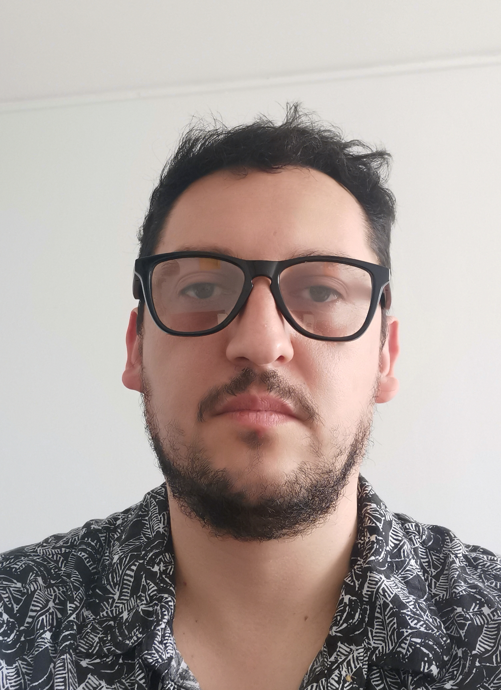

Rudi Bürk
Full Stack Java Developer en formación
Datos de Contacto
Fono: (+56) 990864839
Email: rudi.burk.r@gmail.com
Dirección: Almirante Barroso 557, Valparaíso, Chile.
Linkedin:
linkedin.com/rudi-burk-retamal
Github:
github.com/rudiburk
Formación Académica
Educación Básica: Escuela Alemania
Educación Media Media: Colegio Carlos Cousiño
Educación Superior: Química y farmacia, UV
Praxis: Desarrollo Full Stack Java Developer
Logros Personales
Medalla de Bronce, Campeonato Mundial de Muaythai 2015, Bangkok
Ref.
Ilustrador Secundario en El Niño y la Garza. Studio Ghibli 2013-2019
Ref.
Miembro fundador, Fundación "EnTi"
Ref.